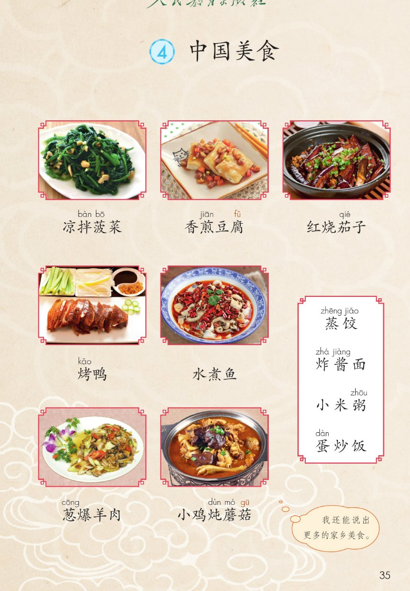
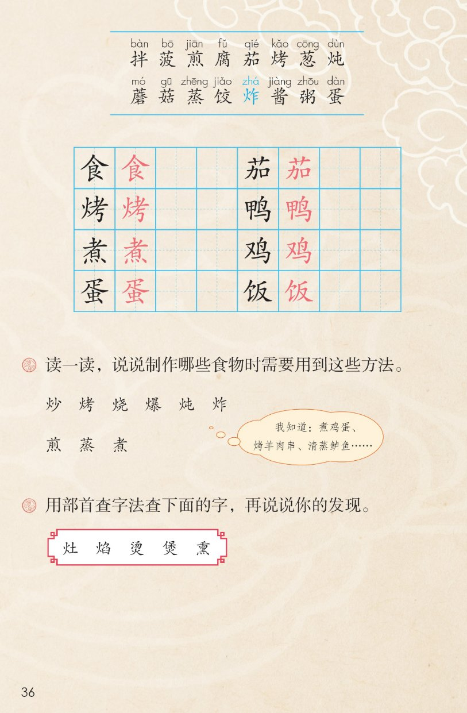

×
🔊 手机听不到声音怎么办？
① 先把手机
媒体音量调大 ，确认没开静音、没连蓝牙耳机；在微信里打开的，点右上角「⋯ → 用浏览器打开」。
② 还是没声音？到应用商店免费下载
Microsoft Edge 浏览器 （它自带朗读发声），用它打开本页面就能出声。
③ 换了 Edge 仍然没声音，说明这部手机的
硬件/系统不支持 网页朗读（多为老旧机型）；近几年买的新手机一般都能正常播放。
→ 打开声音自检
🍜 识字 4《中国美食》· 有声图文带读
语文 · 第三单元·识字 · 课本 第 35~36 页 · 十一道美食与九种做法
美食 7 菜 + 4 主食
会认字 16
会写字 8
听写词 10
近义词 4 组
深入理解 8 题
本领 说美食
🎧 五步学（可随时点任意一个菜名、一个字、一个词单独听）： ① 读美食 ——7 道菜 + 4 种主食，点一个菜名读一个；开「跟读」后读完一个留时间自己读。② 学字词 ——16 个会认字、8 个会写字（含书写提示），点一个读一个；留意蓝色的多音字「炸」。③ 词语·听写·造句 ——读课本第 36 页两道课后题和 9 个烹饪方法字，听写 10 个词，再听 4 组近义词辨析。 ④ 深入理解 ——8 道题（认知 / 理解 / 运用 / 拓展），开放题答案不唯一，先想后看。⑤ 说美食·齐读 ——按 5 步把中国美食说一遍，再按课后题①说说制作哪些食物要用这些方法。
📚 本册第三单元·识字（照课本第 29~35 页页眉）： 1 神州谣 → 2 传统节日 → 3 "贝"的故事 → 4 中国美食（本课）前后连起来看：识字单元四课，歌谣、节日、汉字、美食，字字都在说中国人的生活
📖 课文出处（课本第 35 页） ：本课无脚注；菜名上方注音照课本，「炸」印蓝＝多音字。右下角气泡照录：我还能说出更多的家乡美食。
点区前的 ①~② 听整区
🍜 课题 ：④ 中国美食
（本课课题无注音、无脚注，照课本第 35 页）
🔁 跟读模式：关
👁 隐藏注音（自测用）
注音只标本课要认、要写的字和课本明确标了音的字，每字只注一次；会写字里课本未注的「食 / 鸭 / 煮 / 鸡 / 饭」按字典补注，供参考
🎤 朗读要求 · 读美食名称并说做法（课后题①的老师标准） 读准字音 ：拌 bàn 、菠 bō 、煎 jiān 、腐 fǔ 、茄 qié 、烤 kǎo 、葱 cōng 、炖 dùn 、蘑 mó 、菇 gū 、蒸 zhēng 、饺 jiǎo 、炸 zhá （蓝色多音字，另读 zhà）、酱 jiàng 、粥 zhōu 、蛋 dàn （照课本第 35~36 页）；读好菜名 ：菜名多为做法 + 食材 （凉拌 + 菠菜、香煎 + 豆腐），两个字的读得干脆，五个字的别读断；不添不漏 ：十一个名称一个字都不能少；食shí 是课本未注音的会写字，页面按字典补注，供参考 ；读出馋劲 ：读菜名就像闻到香味——拌 读得脆、炖 读得慢、炸酱面 读出酱香；边读边想 ：每道美食用了哪种做法？读完接后面的 5 步说一说。
①
凉拌bàn 菠bō 菜
香煎jiān 豆腐fǔ
红烧茄qié 子
烤kǎo 鸭yā 水煮zhǔ 鱼
葱cōng 爆羊肉小鸡jī 炖dùn 蘑mó 菇gū
②
蒸zhēng 饺jiǎo 炸zhá 酱jiàng 面小米粥zhōu
蛋dàn 炒饭fàn
🤔 想一想（点我可跳过）
点一张图，听读整页

第 35 页 · 十一道美食的照片与名称

第 36 页 · 生字表与课后题
📖 人教版《语文》二年级下册 · 课本第 35~36 页 · 图片仅供个人学习，版权归人民教育出版社所有
点一个字，听读音、词语和美食名称；照课本第 36 页生字表顺序，「炸」印蓝＝多音字
结构、部首、笔画与书写提示为通用规范，供参考，以教材和字典为准
食
shí
美食 · 食物
9 画 · 上下（食）
人字头盖住，下面写紧凑
茄
qié
茄子 · 番茄
8 画 · 上下（艹）
草字头盖住，加字的口写扁
烤
kǎo
烤鸭 · 烤箱
10 画 · 左右（火）
火字旁窄，右边的考撇要长
鸭
yā
烤鸭 · 鸭子
10 画 · 左右（甲）
甲字旁窄长，鸟字横折钩有力
煮
zhǔ
水煮鱼 · 煮面
12 画 · 上下（灬）
者字上紧下松，四点底托稳
鸡
jī
小鸡 · 母鸡
7 画 · 左右（又）
又字旁小而靠上，鸟字写在右边
蛋
dàn
蛋炒饭 · 鸡蛋
11 画 · 上下（疋）
上下的虫写扁，走之底托住
饭
fàn
蛋炒饭 · 米饭
7 画 · 左右（饣）
饭字旁窄，反字的撇要收
点一行，听题目、方法和词语
📖 课后题（课本第 36 页照录） ：下面 8 行是两道题、9 个方法字、5 个查字与说一说。
课后题 ① 读一读，说说制作哪些食物时需要用到这些方法。
方法行 一 炒 烤 烧 爆 炖 炸
方法行 二 煎 蒸 煮
课本气泡 我知道：煮鸡蛋、
课后题 ② 用部首查字法查下面的字，再说说你的发现。
查字照录 灶 焰 烫 煲 熏
发现 供参考 灶焰烫煲熏都带「火」
说一说 供参考 凉拌——拍黄瓜
读两遍 → 你在纸上写 → 报答案 → 听示范句
准备听写 · 共 10 个词
○ ○ ○
点下面的「开始听写」，听到一个词就写一个词。
▶ 开始听写
🔁 再读一遍
👁 看答案
点词听读，点句子听示范句，再自己说一句
1 美食 课文核心词
示范句：中国美食真多呀！
✏️ 我也能说：说说美食
2 食物 会写字 · 食
示范句：这些食物都是用火做熟的。
✏️ 我也能说：什么食物
3 茄子 会写字 · 茄
示范句：红烧茄子是我的最爱。
✏️ 我也能说：谁爱吃什么
4 烤鸭 会写字 · 烤
示范句：烤鸭皮脆肉香。
✏️ 我也能说：什么怎么样
5 鸭肉 会写字 · 鸭
示范句：鸭肉可以炖汤。
✏️ 我也能说：什么可以做什么
6 煮面 会写字 · 煮
示范句：早晨我帮妈妈煮面。
✏️ 我也能说：谁煮什么
7 小鸡 会写字 · 鸡
示范句：小鸡炖蘑菇香极了。
✏️ 我也能说：小鸡怎么样
8 鸡蛋 会写字 · 蛋
示范句：早晨我吃了一个鸡蛋。
✏️ 我也能说：早餐吃什么
9 米饭 会写字 · 饭
示范句：蛋炒饭要用米饭来炒。
✏️ 我也能说：谁吃饭
10 菠菜 会认字 · 菠
示范句：凉拌菠菜清爽可口。
✏️ 我也能说：什么怎么样
相同点 / 不一样在哪 / 各造一句
炒 — 爆
相同：都写锅里快烧 。
不一样：炒 是普通的快烧，翻动几下就熟，火中等；爆 是猛火、更快，油温高，噼里啪啦一下就好，比如葱爆羊肉。爆比炒更急更快。
炒：蛋炒饭要先把鸡蛋炒香。
煎 — 炸
相同：都写油里做熟 。
不一样：煎 用的油少，两面烙黄就出锅，比如香煎豆腐；炸 要把食物整个泡进热油里，油多、温度高，比如炸酱面的酱要先炸香。煎省油，炸费油。
煎：香煎豆腐两面金黄。
煮 — 炖
相同：都写水里做熟 。
不一样：煮 是火烧得较旺，时间短，比如水煮鱼、煮鸡蛋；炖 是小火慢慢煮，时间长，汤特别浓，比如小鸡炖蘑菇。炖比煮更慢、更有耐心。
煮：水煮鱼麻辣鲜香。
美食 — 佳肴
相同：都写好吃的食物 。
不一样：美食 是课文里的课题词，口语书面语都用，范围广；佳肴 多指桌上丰盛的好菜，带一点文气，比如美酒佳肴。
美食：中国美食举世闻名。
火字旁一家 炒 烤 烧 爆 炖 炸
部首查字 灶 焰 烫 煲 熏
菜名的秘密 凉拌＋菠菜
家乡美食 我还能说出更多的
标「答案不唯一」的题，说得有道理都对
认知 课本一共介绍了哪些美食？哪些是菜、哪些是主食？看解析
🤔 想一想
解析：
七道菜加四种主食，共十一种。
凉拌菠菜到小鸡炖蘑菇。
蒸饺、炸酱面、小米粥、蛋炒饭。
理解 九个烹饪方法字「炒烤烧爆炖炸煎蒸煮」在字形上有什么共同点？为什么？看解析
🤔 想一想
解析：
火字旁和四点底都是火。
做菜离不开火。
看偏旁，就知道字和什么有关。
理解 凉拌和清蒸有什么不一样？什么样的菜适合凉拌？看解析
🤔 想一想
解析：
不点火，加调料拌，吃脆吃鲜。
用蒸汽蒸，吃原味。
菠菜、黄瓜适合凉拌。
🌈 答案不唯一，说得有道理都对
理解 课后题②：用部首查字法查「灶、焰、烫、煲、熏」，你发现了什么？怎么查？看解析
🤔 想一想
解析：
火部或四点底。
除去部首还剩几画就翻到哪一页。
五个字全和火有关。
🌈 答案不唯一，说得有道理都对
理解 菜名「小鸡炖蘑菇」五个字，「烤鸭」两个字，菜名有长有短，它们是怎么起的？看解析
🤔 想一想
解析：
小鸡＋炖＋蘑菇。
烤＋鸭，做法加食材。
红烧说颜色，香煎说香味。
运用 课后题①：从「炒烤烧爆炖炸煎蒸煮」里挑三个方法，各说一道用这种做法做的食物。看解析
🤔 想一想
解析：
九个字里任选。
家里的、课本上的都行。
香、脆、嫩、鲜都可以。
🌈 答案不唯一，说得有道理都对
运用 照「做法＋食材」的规律，给一道你家的家常菜起个名字，再说说怎么做。看解析
🤔 想一想
解析：
做法加食材就是菜名。
用上先、再、最后。
同学、家人都行。
🌈 答案不唯一，说得有道理都对
拓展 课本气泡说「我还能说出更多的家乡美食」。你的家乡有哪些美食？回家问一问，下节课介绍一道。看解析
🤔 想一想
解析：
早饭、节日饭都是线索。
早餐铺、夜市的小吃。
他们小时候的味道。
🌈 答案不唯一，说得有道理都对
点一步，听这一步
💬 课后题①照录 ：读一读，说说制作哪些食物时需要用到这些方法。先 说凉拌 → 再 说煎烧烤 → 接着 说爆炖 → 然后 说水煮 → 最后 说四种主食。
课后题①：点一张卡，听这一组读的菜名
🥗 齐读·凉拌
凉拌菠菜。
💬 清爽干脆，拌读得脆
🍳 小组·煎烧
香煎豆腐。红烧茄子。
💬 外皮香、颜色红，煎读第一声
💥 齐读·煮爆
水煮鱼。葱爆羊肉。
💬 鱼嫩肉香，爆读得响
🍲 男女生·炖
小鸡炖蘑菇。
💬 汤浓味鲜，炖读得慢
🥟 齐读·蒸炸
蒸饺。炸酱面。
💬 热气腾腾，炸这里读二声